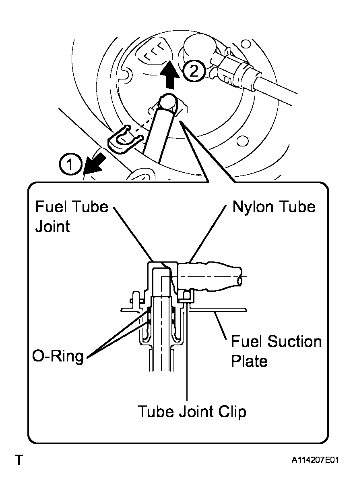
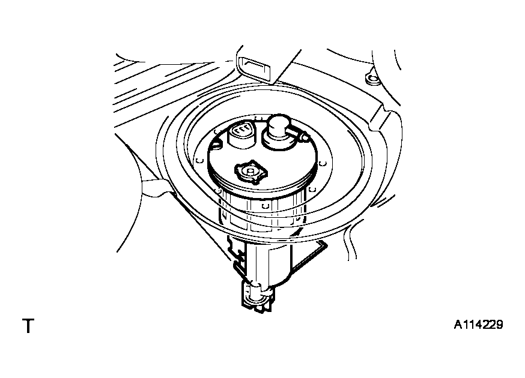
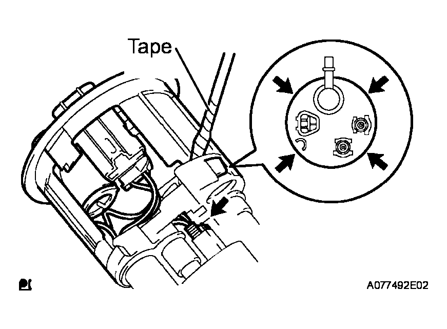

Fuel Pump: Removal
- DISCHARGE FUEL SYSTEM PRESSURE (See REMOVAL )
- DISCONNECT CABLE FROM NEGATIVE BATTERY TERMINAL CAUTION: Wait at least 90 seconds after disconnecting the cable from the negative (-) battery terminal to prevent airbag and seat belt pretensioner activation.
- REMOVE REAR SEAT CUSHION ASSEMBLY (See REMOVAL )
- REMOVE REAR SEAT CUSHION SUPPORT BRACKET
- Remove the 2 bolts and rear seat cushion support bracket.
- REMOVE REAR FLOOR SERVICE HOLE COVER
- Remove the rear floor service hole cover.
- DISCONNECT FUEL PUMP CONNECTOR
- DISCONNECT FUEL PUMP TUBE SUB-ASSEMBLY
- Remove the tube joint clip, and pull out the fuel pump tube.

Courtesy of © TOYOTA, LICENSE AGREEMENT TMS1002NOTE:- Check around the connector for dirt or mud before this operation and clean as necessary.
- Be careful of mud because the quick connector has an O-ring (which seals the pipe and connector) that can be contaminated.
- Do not use any tool in this operation.
- Do not bend or twist the nylon tube. Protect the connector by covering it with a plastic bag.
- When the pipe and connector are stuck, push and pull the connector to release and disconnect the connector.
- Remove the tube joint clip, and pull out the fuel pump tube.
- REMOVE FUEL TANK VENT TUBE SET PLATE BOLT
- Remove the 8 bolts.
HINT:
Only remove the bolts. The fuel tank vent tube set plate is removed in the next step.
- Remove the 8 bolts.
- DISCONNECT NO. 2 FUEL EVAPORATION TUBE SUB-ASSEMBLY
- Pinch the No. 2 fuel evaporation tube clip and then pull out the No. 2 fuel evaporation tube.
NOTE:
- Check around the connector for dirt or mud before this operation and clean as necessary.
- Be careful of mud because the quick connector has an O-ring (which seals the pipe and connector) that can be contaminated.
- Do not use any tool in this operation.
- Do not bend or twist the nylon tube. Protect the connector by covering it with a plastic bag.
- When the pipe and connector are stuck, push and pull the connector to release and disconnect the connector.
- Remove the fuel tank vent tube set plate.
- Pinch the No. 2 fuel evaporation tube clip and then pull out the No. 2 fuel evaporation tube.
- REMOVE FUEL PUMP ASSEMBLY WITH FUEL SENDER GAUGE ASSEMBLY
- Remove the fuel pump with fuel sender gauge from the fuel tank.

Courtesy of © TOYOTA, LICENSE AGREEMENT TMS1002CAUTION:- Do not damage the fuel pump filter.
- Do not bend the arm of the fuel sender gauge.
- Remove the fuel pump with fuel sender gauge from the fuel tank.
- REMOVE NO. 2 FUEL SUCTION SUPPORT
- Using a screwdriver with its tip wrapped in tape, detach the 5 snap claws from the claw holes, and remove the fuel suction support.
NOTE: Do not damage the fuel suction support.
- Using a screwdriver with its tip wrapped in tape, detach the 5 snap claws from the claw holes, and remove the fuel suction support.
- REMOVE FUEL PUMP CUSHION RUBBER
- REMOVE FUEL SENDER GAUGE ASSEMBLY
- Disconnect the fuel sender gauge connector.
- Using a screwdriver with its tip wrapped in tape, unfasten the clamp to release the fuel sender gauge. Slide the fuel sender gauge to remove it from the fuel pump.
- REMOVE FUEL SUCTION PLATE SUB-ASSEMBLY
- Disconnect the fuel pump connector.
- Using a screwdriver with its tip wrapped in tape, detach the 4 snap claws from the claw holes, and pull out the fuel suction plate.

Courtesy of © TOYOTA, LICENSE AGREEMENT TMS1002NOTE: Do not damage the fuel pump filter.
- REMOVE FUEL PUMP HARNESS
- Disconnect the connector.
- Using a small screwdriver, pry out the fuel pump harness.
- REMOVE FUEL PUMP
- Pull out the fuel pump from the fuel filter.
- REMOVE FUEL PUMP FILTER
- Using a small screwdriver, pry out the clip.
- Pull out the fuel pump filter from the fuel pump.
- REMOVE FUEL PRESSURE REGULATOR ASSEMBLY
- Pull out the fuel pressure regulator from the fuel filter.
- Remove the O-ring from the fuel pressure regulator.